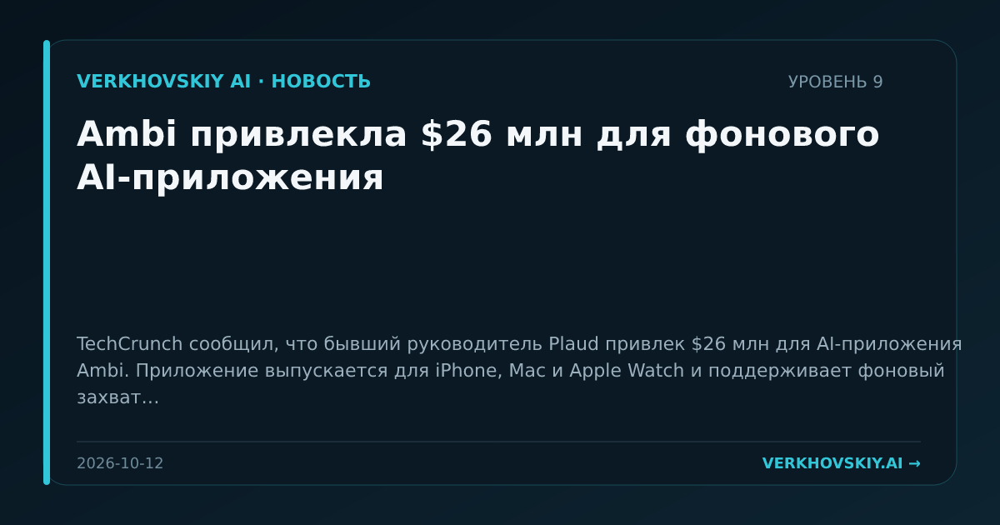

Ambi привлекла $26 млн для фонового AI-приложения
TechCrunch сообщил, что бывший руководитель Plaud привлек $26 млн для AI-приложения Ambi. Приложение выпускается для iPhone, Mac и Apple Watch и поддерживает фоновый захват. Почему это важно: Капитал продолжает идти в персональные AI-интерфейсы, которые постоянно присутствуют рядом с пользователем. Это усиливает конкуренцию за повседневные данные и внимание.